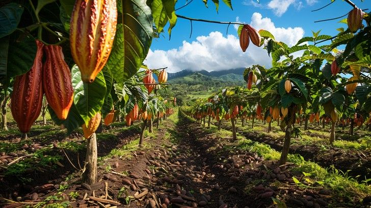

SISTEM INFORMASI PERKEBUNAN
Mengenal dan Mengelola Perkebunan Kakao
Kelola perkebunan kakao dengan lebih mudah, mulai dari pendataan lahan, jadwal pemupukan, hingga pencatatan hasil panen secara teratur dan efisien.

SELAMAT DATANG
Selamat Datang di Kakao Farm
Kakao Farm merupakan website informasi perkebunan kakao yang menyediakan fasilitas pengelolaan data lahan, jadwal pemupukan, pencatatan hasil panen, serta informasi perkebunan kakao.
Lihat Profil Kebun
LAYANAN KAMI
Fitur Pengelolaan Kebun
Berbagai fitur untuk membantu pengelolaan perkebunan kakao.